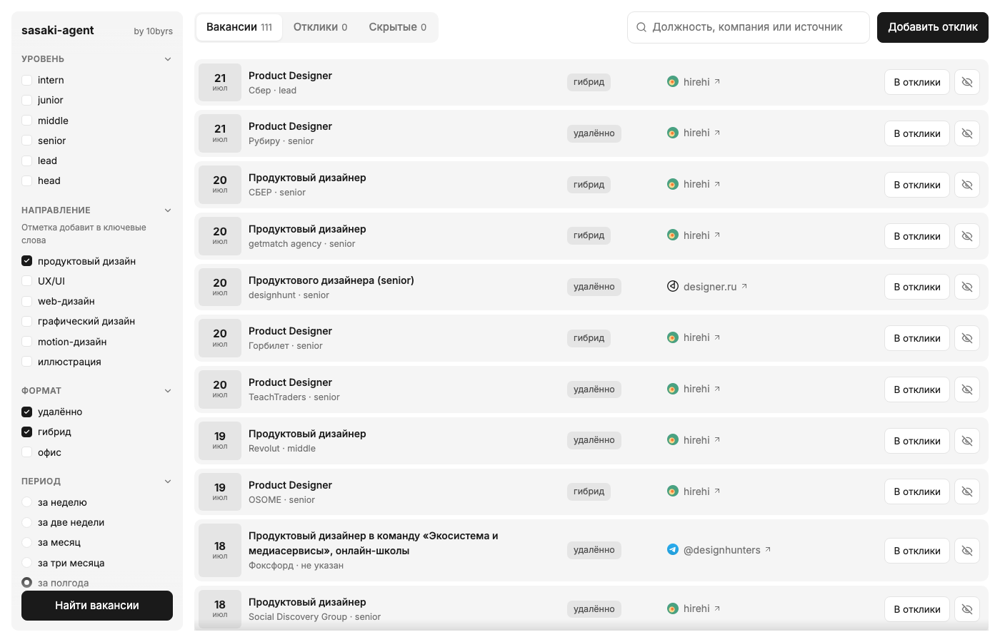

Локальный агент, который ищет тебе работу — сам, каждые 6 часов, пока ты занят делом

Самый быстрый путь: скопируй и вставь в терминал. Склонирует проект, поставит автозапуск и откроет пульт.
Нужен только Node.js 21+ — проверить: node -v
То же самое тремя командами, если хочется видеть каждый шаг:
Есть Claude Code или другой кодовый агент? Скажи ему в пустой папке:
Установка неинтерактивная — агент не застрянет на вопросах
Раз в 6 часов, в фоне. 19 источников из коробки: hh.ru, LinkedIn, getmatch, Хабр Карьера, designer.ru, hirehi, finder, Telegram, Яндекс, VK, Т-Банк, Авито, X5, МТС, Магнит, Wildberries, Точка, Альфа-Банк, 2ГИС и любой другой сайт.
Направление, уровень, формат работы. Дубли между источниками отсеивает, показанное не повторяет.
Если фильтра по направлению мало — задаёшь свои ключевые фразы и стоп-слова. Стоп-слово убирает вакансию из ленты при любом упоминании: так отсекается чужая тематика и нежелательные грейды.
Воронка Новый → Отклик → Собес → Тестовое → Оффер, рядом — сопроводительное письмо. Всё на твоём компьютере.